Overview
'온통 이 생각'은 바쁜 현대인의 삶 속 고요한 여유와 해방감을 느끼게 해줄 몰입형 인터랙티브 웹사이트입니다.
멀티태스킹(Multi-tasking)을 추구하는 사회 속에서 '모노태스킹(Mono-tasking)'의 인터랙션 콘텐츠를 통해 생각을 정리하고 단순화하는 경험을 제공하고 잠깐의 여유를 찾게 하고자 합니다.
Brand
Brand name
온통 이 생각
Tagline
Interactive Portal
Slogan
I'm Full of This
User scenario
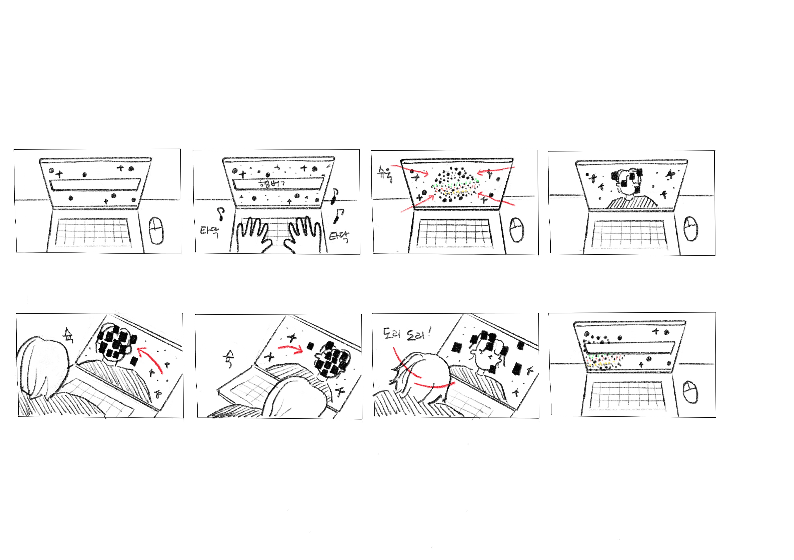
#1 화면에 빈칸이 떠있고 뒤에 별들이 움직이고 있다.
#2 사용자는 빈칸에 단어를 입력하는데, 키보드를 누를 때마다 소리가 생성된다.
#3 해당 단어의 대표 이미지 모양으로 은하가 생성되고 이것은 별들이 파티클로 모여 만들어진다.
#4 은하 안에 들어가면 카메라로 화면 전환이 되면서 사용자 얼굴에 크롤링 된 이미지가 뜬다.
#5 사용자가 이동하는 방식에 따라 이미지들이 움직인다.
#6 사용자가 이동하는 방식에 따라 이미지들이 움직인다.
#7 머리를 흔들면 머릿속 정보들이 빠져나가는 듯 이미지들이 흩어지고 메인 화면으로 나갈 수 있다.
#8 메인 화면에는 검색한 키워드가 은하가 되어 떠다니게 된다.
Technical solution
p5.js의 ML5 라이브러리를 사용해 얼굴인식을 구현하고
로컬 서버를 따로 구현하고 그 위에 기본적인 웹 프론트(html5, css, js)를 구성했습니다.
로컬 스토리지를 사용하여 기본적인 화면 전개를 구현했습니다.
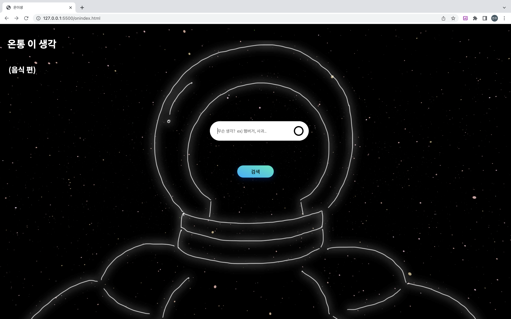

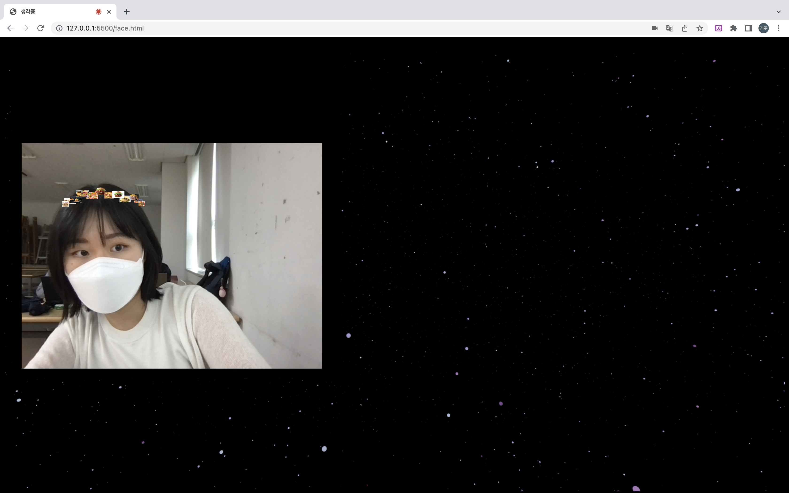
프론트 -- html5, p5js
영상처리 서버 -- python 기반 Flask Framework, OpenCv 라이브러리
그래픽 디자인 -- Cinema4D, Adobe After Effects
Still cut
단어를 입력하고, 그 단어가 3D로 보이고, 내 얼굴에 실시간으로 나타나는
이미지들을 떨쳐내기까지, 사용자가 포털에 들어가고부터 나올 때까지의 모든 경험 과정에서
'모노태스킹'이라는 키워드를 전달하고 사용자가 단계적으로 몰입할 수 있는
웹 환경을 만드는 것에 가장 초점을 두고 진행했습니다.
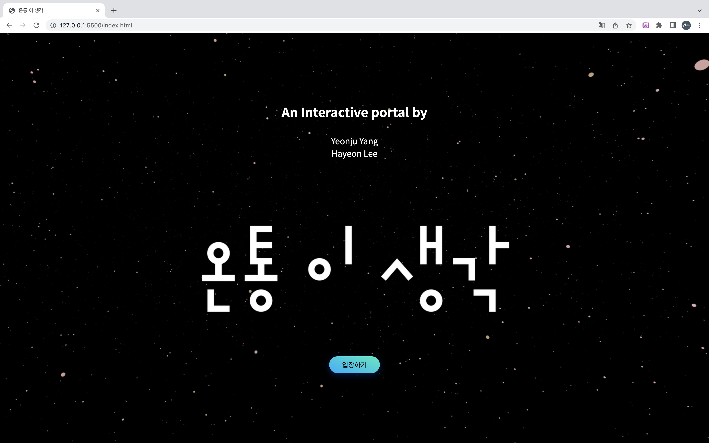
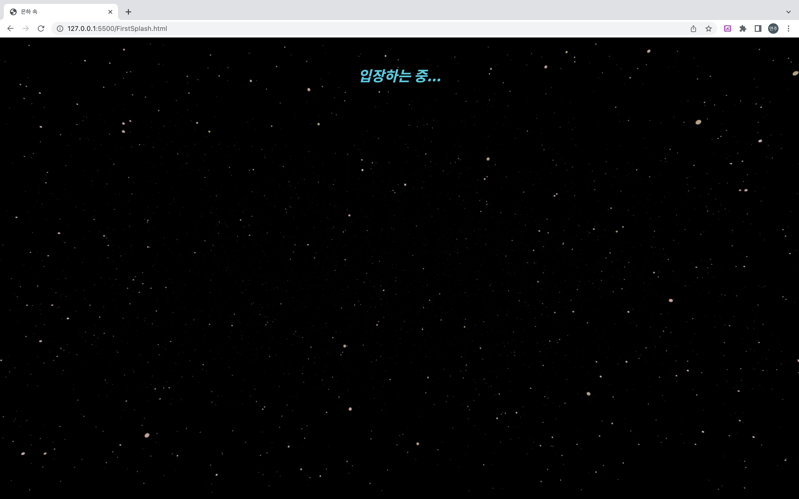
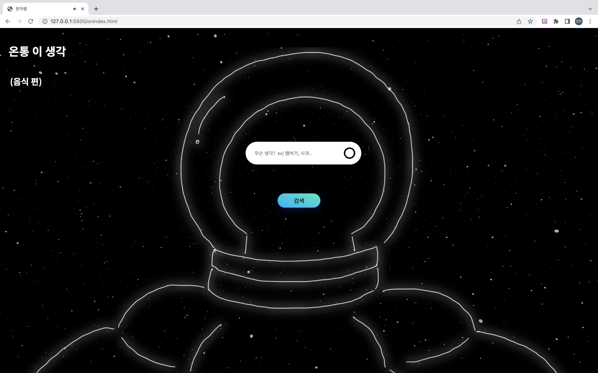
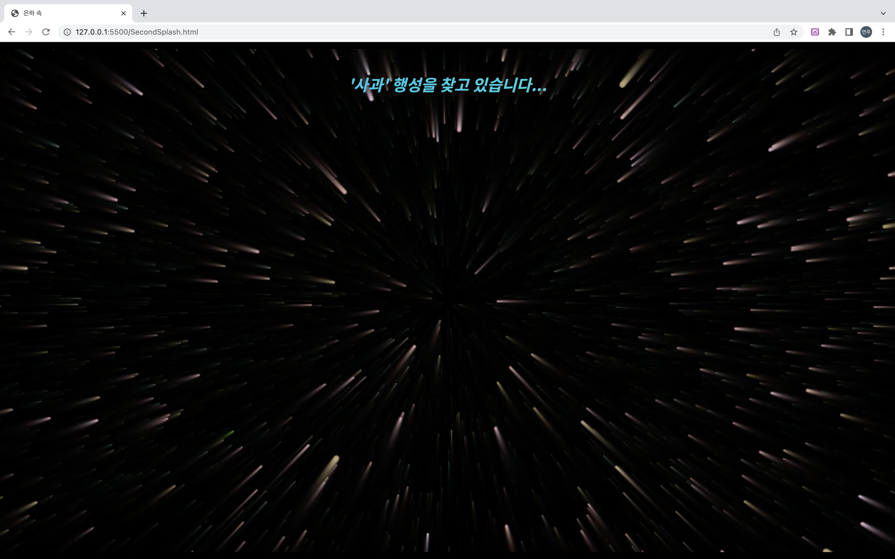

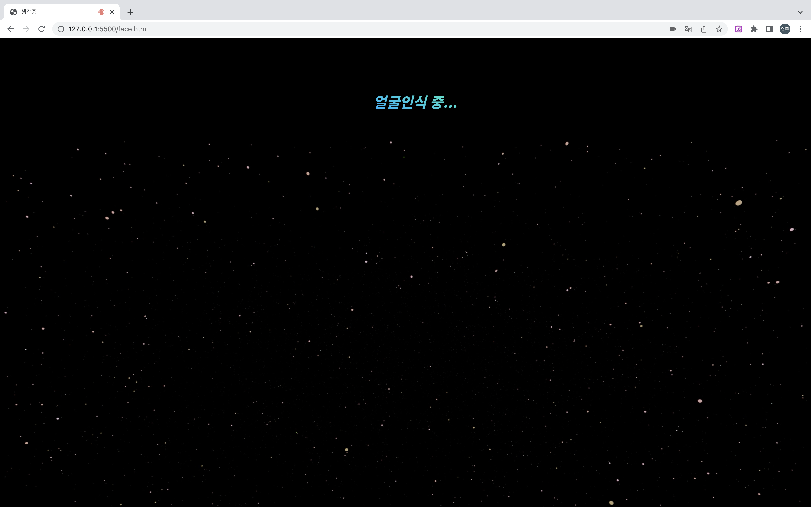
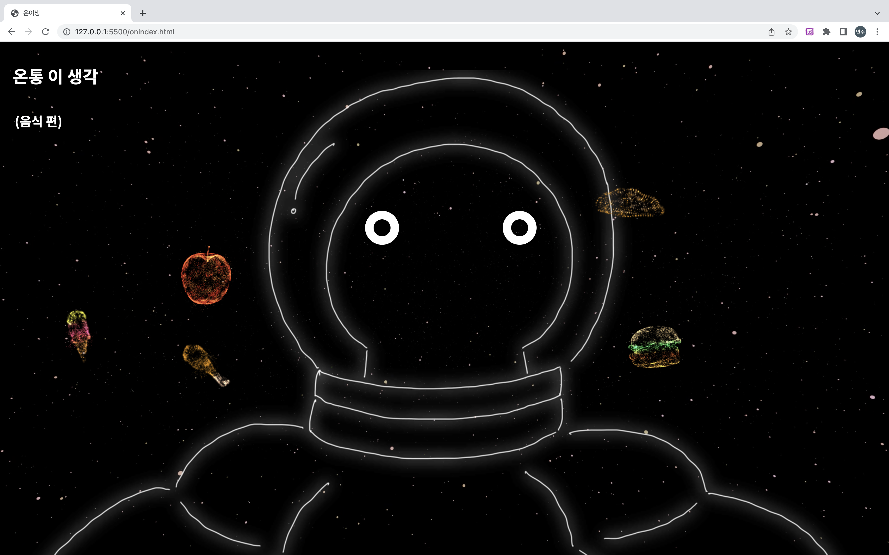
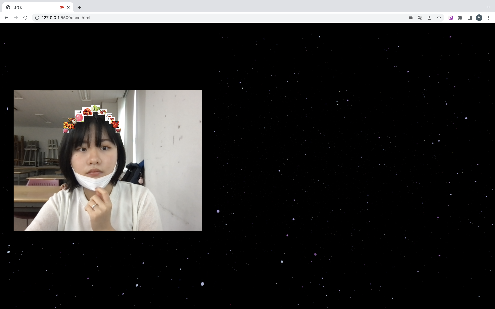
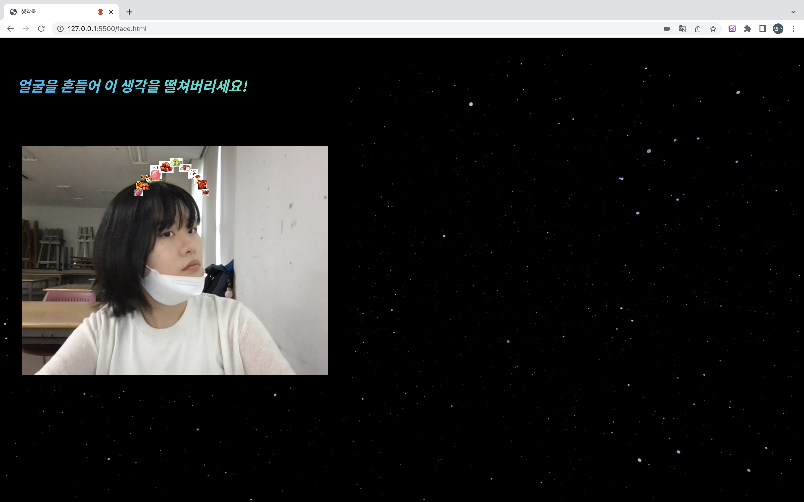
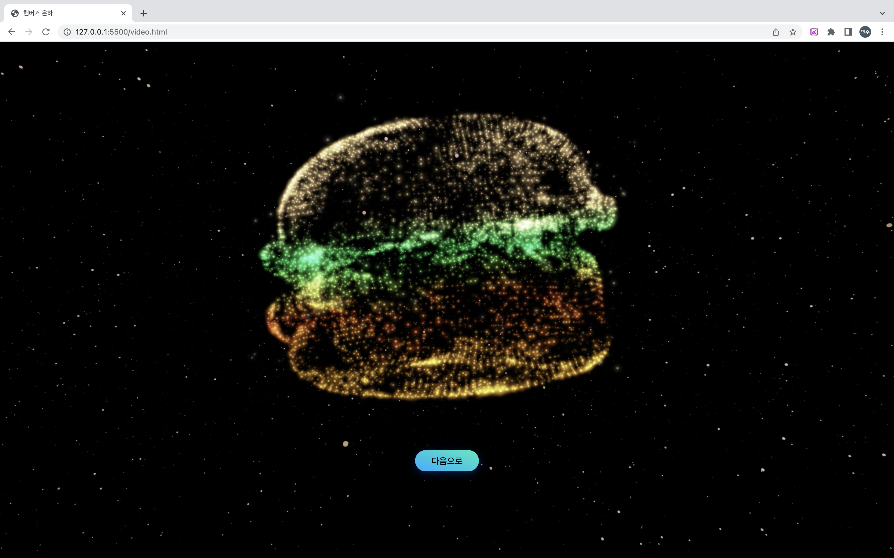
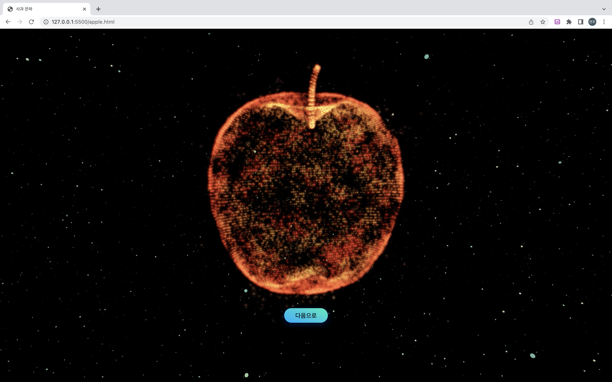
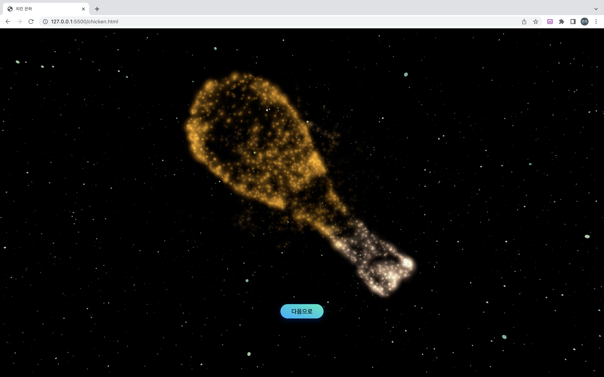
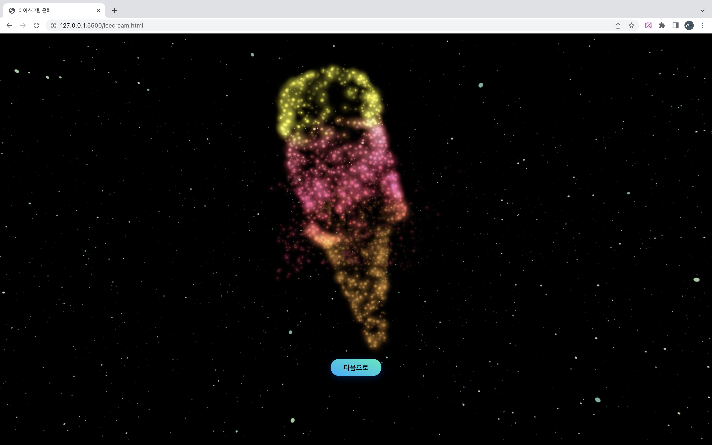
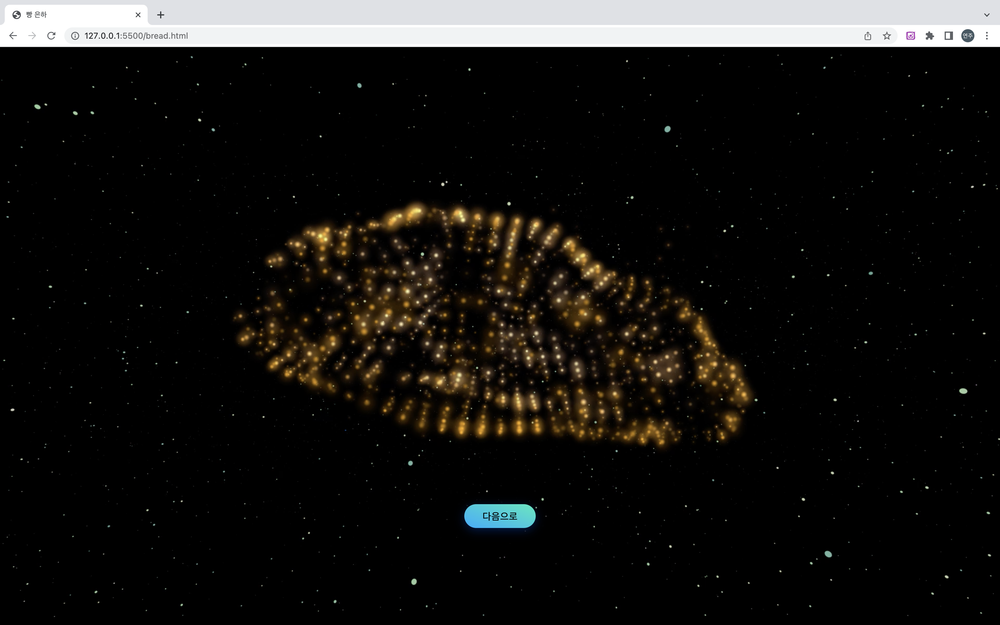